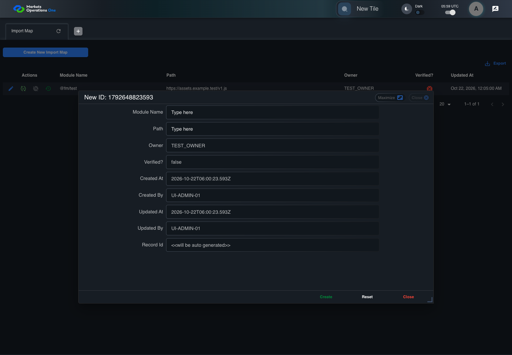
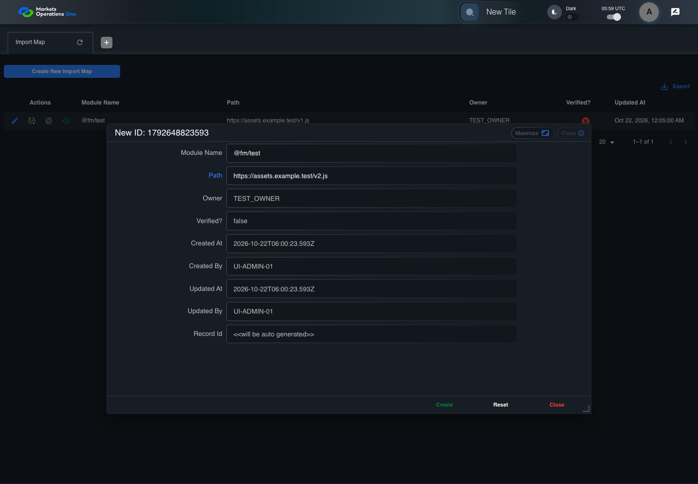
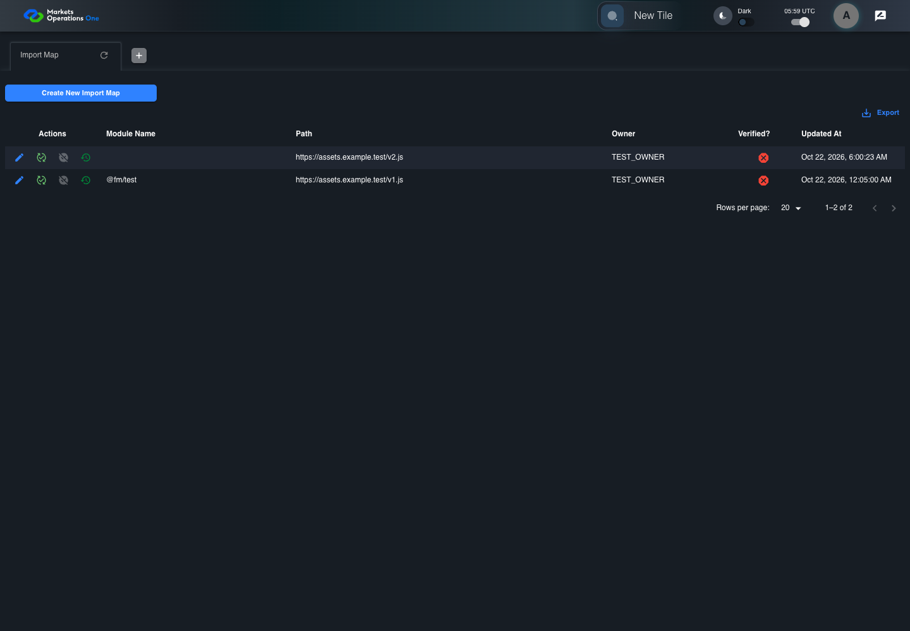

UI-ADM-MAP-003 actual administration UI with step evidence
PASS · application/run-050/ui-adm-map-003-actual-administration-ui-with-step-evidence-ae6155987216-attempt-1 · ACTUAL_APPLICATION_LOCAL_SERVICES
Actual current React administration screens. Controlled browser login supplies UI-ADMIN-01 and TEST_OWNER, or the declared SUPER_USER. Controlled BFF routes return the case-declared records. Other controlled saves persist submitted field values. This run establishes frontend handling only. It does not execute BFF validation, storage, audit generation, or authorization.
2026-10-22T05:59:21.169Z to 2026-10-22T05:59:25.490Z
Assertions and result · Artifact manifest · Exact run inputs and source hashes
Result SHA-256:6f0bc781ddef7fc1e56a3c15517eaced57fae3fb2f7ab620d102863328245224Machine observations
- new-record-source-identity.json
a52ce082142853b6edda02f8dd646462d080f16a628f4e1b432e4e1aa0e87089 - ui-origin-admin-requests.json
eecf8fd1139ddbb0352c2896849da56c10e4d5bc92e3987895d8d80e30f3998f
Screenshot capture: CAPTURED. Named frames: 11.
Step screenshot bindings: COMPLETE. 10/10 canonical steps have execution screenshots.
Bindings measure structural coverage only. They do not establish screenshot content quality or relevance.
Screenshot content review: NOT_REVIEWED. Recorded context: 0/11 frames. Identical image bytes: 4 repeated frames. Recorded context does not establish human visual review.
Canonical step timeline
Given Admin A is authenticated as fixture UI-ADMIN-01 with the case-specific permissions
Execution: PASSED.
1. step-01 Visible state after step 1: Given Admin A is authenticated as fixture UI-ADMIN-01 with the case-specific permissions
2026-10-22T05:59:22.760Z · 1440×1000
Step: /Users/lushevol/code/github/ratan-release-impact/workbench/tasks/ui-test-coverage-20261022/test-cases.md:8207
SHA-256:e3b0f9fc19565c05531c6efe10482168b9bbf39577aa6c46d3b54491467406f9And the Import Map admin screen is open for UI-ADMIN-01; fixture record 101 is inactive and has Path https://assets.example.test/v1.js; its owner is TEST_OWNER; the create response is a record with importMapId 102 and Path https://assets.example.test/v2.js
Execution: PASSED.
2. step-02 Visible state after step 2: And the Import Map admin screen is open for UI-ADMIN-01; fixture record 101 is inactive and has Path https://assets.example.test/v1.js; its owner is TEST_OWNER; the create response is a record with importMapId 102 and Path https://assets.example.test/v2.js
2026-10-22T05:59:23.659Z · 1440×1000
Step: /Users/lushevol/code/github/ratan-release-impact/workbench/tasks/ui-test-coverage-20261022/test-cases.md:8208
SHA-256:8c5c1415a703219dbc7fa910fa08faeb5601d93a8f6d45681b924839af490a8fWhen Admin A clicks button named "Create New Import Map" inside the "Import Map" administration tabpanel
Execution: PASSED.
3. step-03 Visible state after step 3: When Admin A clicks button named "Create New Import Map" inside the "Import Map" administration tabpanel
2026-10-22T05:59:23.964Z · 1440×1000
Step: /Users/lushevol/code/github/ratan-release-impact/workbench/tasks/ui-test-coverage-20261022/test-cases.md:8209
SHA-256:b90b1946e6250e57b39c97a8ad3c39e00a2d91c7375624486fb5d0916711596cAnd Admin A enters "@fm/test" into textbox named "Module Name" inside the new-record dialog inside the "Import Map" administration tabpanel
Execution: PASSED.4. step-04 Visible state after step 4: And Admin A enters "@fm/test" into textbox named "Module Name" inside the new-record dialog inside the "Import Map" administration tabpanel
2026-10-22T05:59:24.085Z · 1440×1000
Step: /Users/lushevol/code/github/ratan-release-impact/workbench/tasks/ui-test-coverage-20261022/test-cases.md:8210
SHA-256:4866cf2a7096a7cdf4e91853e132bdff6029768e4cb168aa9151bb61c1d1a1adAnd Admin A enters "https://assets.example.test/v2.js" into textbox named "Path" inside the new-record dialog inside the "Import Map" administration tabpanel
Execution: PASSED.5. step-05 Visible state after step 5: And Admin A enters "https://assets.example.test/v2.js" into textbox named "Path" inside the new-record dialog inside the "Import Map" administration tabpanel
2026-10-22T05:59:24.188Z · 1440×1000
Step: /Users/lushevol/code/github/ratan-release-impact/workbench/tasks/ui-test-coverage-20261022/test-cases.md:8211
SHA-256:abb2401cd15aa30ede9f851a9fe930b876d76b870d7e90dea3375db31c0d564aAnd the declared controlled field clock advances by 300 milliseconds
Execution: PASSED.
6. step-06 Visible state after step 6: And the declared controlled field clock advances by 300 milliseconds
2026-10-22T05:59:24.482Z · 1440×1000
Step: /Users/lushevol/code/github/ratan-release-impact/workbench/tasks/ui-test-coverage-20261022/test-cases.md:8212
SHA-256:3e85e51b546ca951f1994585defe9b1abd4c7cf9574140e39e4679a4c3f67083And Admin A clicks button named "Create" inside the new-record dialog inside the "Import Map" administration tabpanel
Execution: PASSED.
7. step-07 Visible state after step 7: And Admin A clicks button named "Create" inside the new-record dialog inside the "Import Map" administration tabpanel
2026-10-22T05:59:24.655Z · 1440×1000
Step: /Users/lushevol/code/github/ratan-release-impact/workbench/tasks/ui-test-coverage-20261022/test-cases.md:8213
SHA-256:bedc186d08d7bada88916a2c5fce9a8a4db03e61a5fdb80bd4778cbff97b8a69Then exactly one row with Record Id "102" exists in data grid with source identity "administration records" inside the "Import Map" administration tabpanel
Execution: PASSED.
8. step-08 Visible state after step 8: Then exactly one row with Record Id "102" exists in data grid with source identity "administration records" inside the "Import Map" administration tabpanel
2026-10-22T05:59:24.739Z · 1440×1000
Step: /Users/lushevol/code/github/ratan-release-impact/workbench/tasks/ui-test-coverage-20261022/test-cases.md:8214
SHA-256:bedc186d08d7bada88916a2c5fce9a8a4db03e61a5fdb80bd4778cbff97b8a69Image bytes match frame 7. An unchanged image can be valid for consecutive assertions. This match does not establish correct step content.
And cell named "Path" inside row with Record Id "102" in the "Import Map" administration data grid displays "https://assets.example.test/v2.js"
Execution: PASSED.
9. step-09 Visible state after step 9: And cell named "Path" inside row with Record Id "102" in the "Import Map" administration data grid displays "https://assets.example.test/v2.js"
2026-10-22T05:59:24.875Z · 1440×1000
Step: /Users/lushevol/code/github/ratan-release-impact/workbench/tasks/ui-test-coverage-20261022/test-cases.md:8215
SHA-256:bedc186d08d7bada88916a2c5fce9a8a4db03e61a5fdb80bd4778cbff97b8a69Image bytes match frame 8. An unchanged image can be valid for consecutive assertions. This match does not establish correct step content.
And dialog with source identity "new ID: <captured fixture timestamp>" inside the "Import Map" administration tabpanel is absent
Execution: PASSED.
10. step-10 Visible state after step 10: And dialog with source identity "new ID: <captured fixture timestamp>" inside the "Import Map" administration tabpanel is absent
2026-10-22T05:59:24.953Z · 1440×1000
Step: /Users/lushevol/code/github/ratan-release-impact/workbench/tasks/ui-test-coverage-20261022/test-cases.md:8216
SHA-256:bedc186d08d7bada88916a2c5fce9a8a4db03e61a5fdb80bd4778cbff97b8a69Image bytes match frame 9. An unchanged image can be valid for consecutive assertions. This match does not establish correct step content.
Additional named frames

The final visible state after the named test assertions.
2026-10-22T05:59:25.067Z · 1440×1000Step: Test source: /Users/lushevol/code/github/ratan-release-impact/workbench/e2e/audit-specs/admin-expanded.spec.ts:15
SHA-256:
bedc186d08d7bada88916a2c5fce9a8a4db03e61a5fdb80bd4778cbff97b8a69Image bytes match frame 10. An unchanged image can be valid for consecutive assertions. This match does not establish correct step content.
Screenshots establish visible state only. Assertions and traces support functional claims.